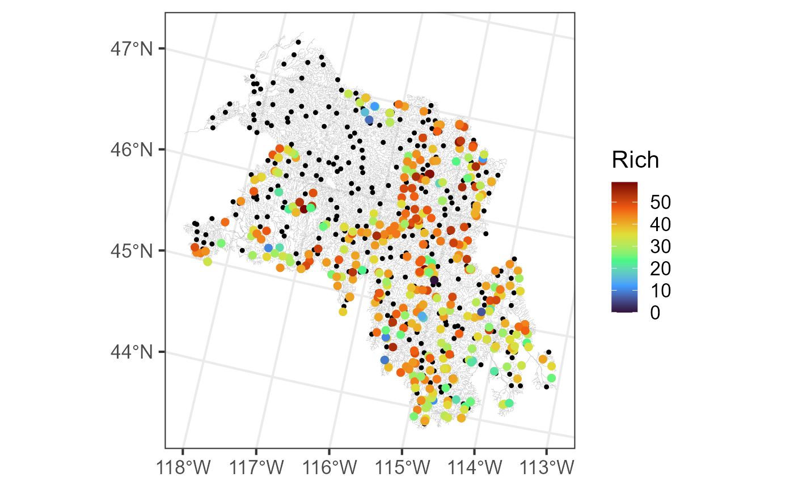
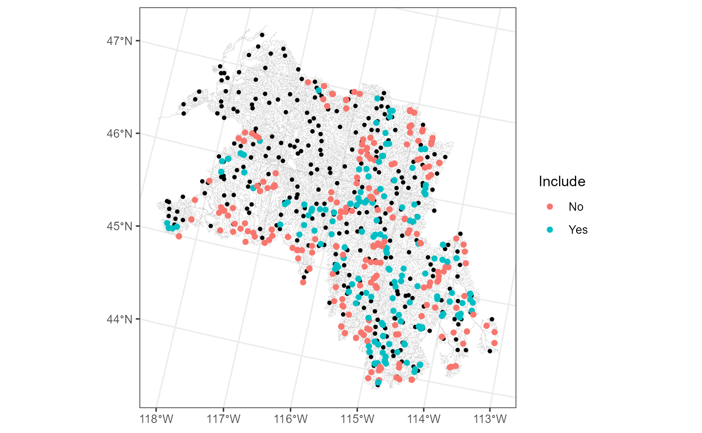
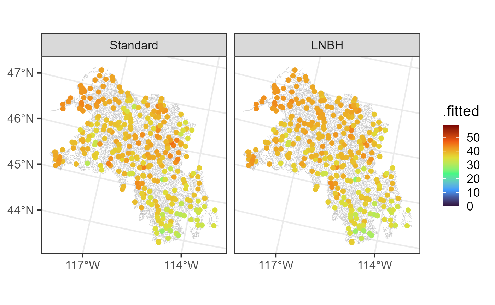

Fitting Spatial Stream Network Models to Large Data Sets and Making Predictions (i.e., Kriging)
Michael Dumelle
Source:vignettes/articles/LargeData.Rmd
LargeData.RmdBackground
It can be challenging to fit SSN models to large data sets because
the computation burden associated with estimating spatial covariance
parameters increases exponentially with \(n\), the sample size. Typically, it is only
feasible to fit SSN2 models using the standard (i.e., traditional)
approach for data sets having no more than a few thousand observations.
Ver Hoef et al. (2023) proposed an
approach called spatial indexing that can be used to fit SSN models
having tens to hundreds of thousands of observations relatively quickly.
Ver Hoef et al. (2023) and Dumelle et al. (2024) show that spatial indexing
tends to approximate the standard solution very accurately at a fraction
of the computational cost via several simulation studies and data
analyses. Spatial indexing works by splitting the data up into smaller
subsets (\(n_{subset} << n\)) and
pooling spatial covariance parameters estimates across these subsets.
This vignette aims to compare the standard approach and large data
(i.e., spatial indexing) approach directly on a moderately sized data
set, whereby the standard approach can be fit relatively quickly. In
SSN2, spatial indexing is available via the
local argument to ssn_lm() and
ssn_glm().
Interestingly, the main computational burden associated with
prediction at new locations is actually related to the size of the
observed data (\(n\)), not the number
of locations requiring prediction (\(n_{pred})\). Ver
Hoef et al. (2023) describe an approach to prediction at new
locations using models fit to large (observed) data sets called local
neighborhood prediction. Local neighborhood prediction subsets the
observed data to include only the size observations most
correlated with the location requiring prediction (where
size is an integer). Typically, this subsetting is done
separately for each prediction location. However, due to computational
constraints associated with the hydrologic distance matrices required by
SSN models, local neighborhood prediction in SSN2 subsets
the observed data to the size observations most correlated
(on average) with all locations requiring prediction. In
SSN2, local neighborhood prediction is available via the
local argument to predict() and
augment().
Before proceeding, we load the SSN2 and
ggplot2 R packages (which can all be
installed directly from CRAN) by running:
The bugs Data
The bugs data is an SSN object that contains
macroinvertebrate data in the Lower Snake Basin. It can be downloaded
via GitHub at this
link. We read in bugs by running:
bugs <- ssn_import("bugs.ssn", predpts = "pred")There are 549 observed sites (\(n\)) and 300 prediction sites (\(n_{pred}\)):
bugs
#> Object of class SSN
#>
#> Object includes observations on 13 variables across 549 sites within the bounding box
#> xmin ymin xmax ymax
#> -1765346 2459843 -1343175 2909567
#>
#> Object also includes 1 set of prediction points with 300 locations
#>
#> Variable names are (found using ssn_names(object)):
#> $obs
#> [1] "comid" "ELEV_DEM" "AREAWTMAP" "Rich" "rid" "ratio"
#> [7] "upDist" "afvArea" "locID" "netID" "pid" "geometry"
#> [13] "netgeom"
#>
#> $pred
#> [1] "comid" "ELEV_DEM" "AREAWTMAP" "rid" "ratio" "upDist"
#> [7] "afvArea" "locID" "netID" "pid" "geom" "netgeom"We visualize the flowlines (edges), observed macroinvertebrate richness (obs), and prediction sites (preds) by running:
ggplot() +
geom_sf(data = bugs$edges, linewidth = 0.1, alpha = 0.8, color = "darkgrey") +
geom_sf(data = bugs$preds$pred, color = "black", size = 0.9) +
geom_sf(data = bugs$obs, aes(color = Rich), size = 2) +
scale_color_viridis_c(option = "H", limits = c(0, 59)) +
theme_bw(base_size = 16)
The Standard SSN Approach
Before fitting a standard SSN model to the bugs data, we
create the hydrologic distance matrices required for model fitting by
running:
ssn_create_distmat(bugs, predpts = "pred", among_predpts = TRUE)Then we fit a standard SSN model by running:
standard_start <- Sys.time()
ssn_mod <- ssn_lm(
formula = Rich ~ ELEV_DEM,
ssn.object = bugs,
tailup_type = "exponential",
taildown_type = "exponential",
additive = "afvArea"
)
standard_time <- Sys.time() - standard_start
standard_time
#> Time difference of 5.222182 secsThe model took 5.22 seconds to fit.
We augment the prediction data with predictions by running:
aug_ssn_mod <- augment(ssn_mod, newdata = "pred", interval = "prediction")The Large Data SSN Approach (i.e., Spatial Indexing)
We create the hydrologic distance matrices required for fitting SSN
models to large data sets via spatial indexing using
ssn_create_bigdist():
ssn_create_bigdist(bugs, predpts = "pred", among_predpts = TRUE, no_cores = 2)Like ssn_create_distmat(),
ssn_create_bigdist() creates distance matrices in the
distance folder of the .ssn. However, the
distance matrices created by ssn_create_bigdist() have a
special .bmat or .txt extension (instead of a
.Rdata) extension. Distance matrices with
.bmat and .txt extensions are accessed when we
implement spatial indexing via the local argument:
set.seed(1)
bd_start <- Sys.time()
ssn_mod_bd <- ssn_lm(
formula = Rich ~ ELEV_DEM,
ssn.object = bugs,
tailup_type = "exponential",
taildown_type = "exponential",
additive = "afvArea",
local = TRUE
)
bd_time <- Sys.time() - bd_start
bd_time
#> Time difference of 2.370396 secsThe model took 2.37 seconds to fit.
The local argument set to TRUE implements
default settings of a more complex local list that has
several options controlling nuances of the spatial indexing. One of
these options is the method used to assign observations to smaller
subsets. The default approach is k-means clustering, chosen so that each
smaller subset has a sample size of approximately 200. We can access the
smaller subsets used by the model object and visualize them by
running:
bugs$obs$index <- as.factor(ssn_mod_bd$local_index)
ggplot() +
geom_sf(data = bugs$edges, linewidth = 0.1, alpha = 0.8, color = "darkgrey") +
geom_sf(data = bugs$obs, aes(color = index), size = 2) +
scale_color_viridis_d() +
theme_bw(base_size = 16)
The kmeans() algorithm that determines subsets uses a
random start, so setting a seed is required to reproduce results
exactly. Model results should not change substantially between random
starts, however. A fixed subset list can be provided to
local so that subset assignment does not change across
model fits. For more on the local argument, see the
ssn_lm() documentation by running ?ssn_lm() or
by visiting this
link.
Now we use the model fit via spatial indexing to make local
neighborhood predictions. In predict() (and
augment()), the default value for the local neighborhood
size is 4,000, which is larger than \(n = 549\). However, if we set
size to be 250 (instead of 4,000), we can illustrate some
concepts behind local neighborhood prediction in SSN2 that
will be useful when observed data sets are larger and size
\(<< n\).
When setting size to 250, the 250 observations sharing
the highest average covariance with the prediction locations are used as
the local neighborhood subset. We compute the covariance matrix between
the prediction and observed locations by running:
We then find the average covariance between the prediction and observed locations by running:
avg_cov_with_obs <- colMeans(cov_pred_by_obs)We then order these (largest covariance first), find indices
corresponding to the 250 observations with the highest average
covariance, and create a vector called Include, that has
the value "Yes" if the observation is used in the local
neighborhood subset and the value "No" if it is not:
cov_order <- order(avg_cov_with_obs, decreasing = TRUE)
largest_300 <- cov_order[1:250]
row_number <- seq(from = 1, to = NROW(bugs$obs))
bugs$obs$Include <- ifelse(row_number %in% largest_300, "Yes", "No")We can visualize these designations by running:
ggplot() +
geom_sf(data = bugs$edges, linewidth = 0.1, alpha = 0.8, color = "darkgrey") +
geom_sf(data = bugs$preds$pred, color = "black", size = 0.9) +
geom_sf(data = bugs$obs, aes(color = Include)) +
theme_bw()
The 250 observations with the highest average covariance
(Include = "Yes") tend to be nearby several prediction
points, while the remaining observations (Include = "No")
are often on the basin’s boundaries.
Using a local neighborhood size of 250, we then augment
the prediction data with predictions by running:
aug_ssn_mod_bd <- augment(
x = ssn_mod_bd,
newdata = "pred",
interval = "prediction",
local = list(size = 250)
)Unsurprisingly, the local neighborhood approach may not perform well
when prediction locations are far away from any observed locations in
the local neighborhood, which can happen when size \(<< n\). In this case, one can
separate prediction locations into smaller geographically based subsets
and stored as separate prediction data sets in
ssn.object$preds. The local neighborhood is recomputed for
each subset separately based on the size observations most
correlated (on average) with the prediction locations from that
subset.
Comparing the Approaches
So far we fit the same model using the 1) standard and 2) large data set (i.e., spatial indexing) approaches and made predictions at new locations using the 1) standard and 2) large data set (i.e., local neighborhood prediction) approaches. How do the results from the distinct approaches compare?
Model Summaries
The two approaches have very similar summary output, particularly in the fixed effects coefficients table (which is often of primary ecological interest):
summary(ssn_mod)
#>
#> Call:
#> ssn_lm(formula = Rich ~ ELEV_DEM, ssn.object = bugs, tailup_type = "exponential",
#> taildown_type = "exponential", additive = "afvArea")
#>
#> Residuals:
#> Min 1Q Median 3Q Max
#> -36.387 -5.289 1.693 7.139 22.507
#>
#> Coefficients (fixed):
#> Estimate Std. Error z value Pr(>|z|)
#> (Intercept) 44.358544 2.216618 20.012 < 2e-16 ***
#> ELEV_DEM -0.004651 0.001357 -3.428 0.000609 ***
#> ---
#> Signif. codes: 0 '***' 0.001 '**' 0.01 '*' 0.05 '.' 0.1 ' ' 1
#>
#> Pseudo R-squared: 0.02134
#>
#> Coefficients (covariance):
#> Effect Parameter Estimate
#> tailup exponential de (parsill) 5.281e+00
#> tailup exponential range 1.008e+06
#> taildown exponential de (parsill) 2.395e+01
#> taildown exponential range 4.582e+04
#> nugget nugget 6.016e+01
summary(ssn_mod_bd)
#>
#> Call:
#> ssn_lm(formula = Rich ~ ELEV_DEM, ssn.object = bugs, tailup_type = "exponential",
#> taildown_type = "exponential", additive = "afvArea", local = TRUE)
#>
#> Residuals:
#> Min 1Q Median 3Q Max
#> -36.608 -5.439 1.572 6.845 22.290
#>
#> Coefficients (fixed):
#> Estimate Std. Error z value Pr(>|z|)
#> (Intercept) 44.198118 2.018556 21.896 < 2e-16 ***
#> ELEV_DEM -0.004428 0.001255 -3.528 0.000418 ***
#> ---
#> Signif. codes: 0 '***' 0.001 '**' 0.01 '*' 0.05 '.' 0.1 ' ' 1
#>
#> Pseudo R-squared: 0.02201
#>
#> Coefficients (covariance):
#> Effect Parameter Estimate
#> tailup exponential de (parsill) 1.417e+00
#> tailup exponential range 9.174e+05
#> taildown exponential de (parsill) 2.496e+01
#> taildown exponential range 2.834e+04
#> nugget nugget 5.888e+01Leave-One-Out Cross Validation
The two approaches have very similar leave-one-out cross validation output:
loocv(ssn_mod)
#> # A tibble: 1 × 10
#> bias std.bias MSPE RMSPE std.MSPE RAV cor2 cover.80 cover.90 cover.95
#> <dbl> <dbl> <dbl> <dbl> <dbl> <dbl> <dbl> <dbl> <dbl> <dbl>
#> 1 0.0382 0.00959 75.3 8.68 0.984 8.74 0.157 0.825 0.903 0.953
loocv(ssn_mod_bd)
#> # A tibble: 1 × 10
#> bias std.bias MSPE RMSPE std.MSPE RAV cor2 cover.80 cover.90 cover.95
#> <dbl> <dbl> <dbl> <dbl> <dbl> <dbl> <dbl> <dbl> <dbl> <dbl>
#> 1 0.0340 0.00860 75.4 8.69 1.01 8.63 0.155 0.821 0.903 0.953Prediction
The predictions from the two approaches are very similar. We see the first few rows of the augmented prediction data by running:
head(aug_ssn_mod[, c("ELEV_DEM", ".fitted", ".lower", ".upper", "pid")])
#> Simple feature collection with 6 features and 5 fields
#> Geometry type: POINT
#> Dimension: XY
#> Bounding box: xmin: -1752503 ymin: 2662140 xmax: -1682209 ymax: 2722702
#> Projected CRS: USA_Contiguous_Albers_Equal_Area_Conic_USGS_version
#> # A tibble: 6 × 6
#> ELEV_DEM .fitted .lower .upper pid geometry
#> <int> <dbl> <dbl> <dbl> <int> <POINT [m]>
#> 1 707 41.0 23.2 58.7 550 (-1682209 2720031)
#> 2 1266 38.4 19.9 56.9 709 (-1709066 2717244)
#> 3 1262 39.8 21.5 58.1 868 (-1752503 2692751)
#> 4 888 38.8 20.5 57.0 1141 (-1698700 2662140)
#> 5 1303 39.9 21.7 58.1 1365 (-1750463 2674396)
#> 6 1078 40.0 22.4 57.6 1613 (-1685728 2722702)
head(aug_ssn_mod_bd[, c("ELEV_DEM", ".fitted", ".lower", ".upper", "pid")])
#> Simple feature collection with 6 features and 5 fields
#> Geometry type: POINT
#> Dimension: XY
#> Bounding box: xmin: -1752503 ymin: 2662140 xmax: -1682209 ymax: 2722702
#> Projected CRS: USA_Contiguous_Albers_Equal_Area_Conic_USGS_version
#> # A tibble: 6 × 6
#> ELEV_DEM .fitted .lower .upper pid geometry
#> <int> <dbl> <dbl> <dbl> <int> <POINT [m]>
#> 1 707 41.4 23.5 59.2 550 (-1682209 2720031)
#> 2 1266 38.7 20.5 56.8 709 (-1709066 2717244)
#> 3 1262 39.6 21.6 57.7 868 (-1752503 2692751)
#> 4 888 40.4 22.2 58.6 1141 (-1698700 2662140)
#> 5 1303 39.8 21.8 57.8 1365 (-1750463 2674396)
#> 6 1078 40.7 23.2 58.1 1613 (-1685728 2722702)We visualize the predictions from the standard approach and local neighborhood (LNBH) approach by running:
aug_ssn_mod$type <- "Standard"
aug_ssn_mod_bd$type <- "LNBH"
augs <- rbind(aug_ssn_mod, aug_ssn_mod_bd)
augs$type <- factor(augs$type, levels = c("Standard", "LNBH"))
ggplot(augs) +
geom_sf(data = bugs$edges, linewidth = 0.1, alpha = 0.8, color = "darkgrey") +
geom_sf(data = augs, aes(color = .fitted), size = 2) +
facet_wrap(~ type) +
scale_color_viridis_c(option = "H", limits = c(0, 59)) +
scale_x_continuous(breaks = -c(117, 114)) +
theme_bw(base_size = 16)
We predict the average in the entire domain (i.e., block prediction) by running:
Closing Thoughts
The standard and large data set (i.e., spatial indexing; local neighborhood prediction) approaches used here yielded very similar results. For data with larger observed sample sizes (\(n > \approx 5,000\)), the spatial indexing and local neighborhood prediction approaches are significantly more computationally efficient than their standard approach counterparts (in fact, the standard approaches won’t be feasible for very large data sets). See Ver Hoef et al. (2023) and Dumelle et al. (2024) for a more thorough look at spatial indexing and local neighborhood prediction.
Why the Computational Burden?
The main computational burden associated with estimation and prediction is computing products that involve the inverse covariance matrix. Inversion scales cubically with the sample size. This means that if the sample size doubles, the inversion computational cost increases eight-fold! For estimating parameters, this inversion is required during each step of the optimization algorithm (generally, dozens of steps are required for convergence of the optimization algorithm). For prediction, this inversion is only required once. So, for data sets having a few thousand observations, one can use spatial indexing to fit the model but then use standard prediction instead of local neighborhood prediction (as the inverse covariance matrix products are only required once).
R Code Appendix
knitr::opts_chunk$set(
collapse = TRUE,
comment = "#>",
message = FALSE,
warning = FALSE
)
library(SSN2)
library(ggplot2)
bugs <- ssn_import("bugs.ssn", predpts = "pred")
bugs
ggplot() +
geom_sf(data = bugs$edges, linewidth = 0.1, alpha = 0.8, color = "darkgrey") +
geom_sf(data = bugs$preds$pred, color = "black", size = 0.9) +
geom_sf(data = bugs$obs, aes(color = Rich), size = 2) +
scale_color_viridis_c(option = "H", limits = c(0, 59)) +
theme_bw(base_size = 16)
ssn_create_distmat(bugs, predpts = "pred", among_predpts = TRUE)
standard_start <- Sys.time()
ssn_mod <- ssn_lm(
formula = Rich ~ ELEV_DEM,
ssn.object = bugs,
tailup_type = "exponential",
taildown_type = "exponential",
additive = "afvArea"
)
standard_time <- Sys.time() - standard_start
standard_time
aug_ssn_mod <- augment(ssn_mod, newdata = "pred", interval = "prediction")
ssn_create_bigdist(bugs, predpts = "pred", among_predpts = TRUE, no_cores = 2)
set.seed(1)
bd_start <- Sys.time()
ssn_mod_bd <- ssn_lm(
formula = Rich ~ ELEV_DEM,
ssn.object = bugs,
tailup_type = "exponential",
taildown_type = "exponential",
additive = "afvArea",
local = TRUE
)
bd_time <- Sys.time() - bd_start
bd_time
bugs$obs$index <- as.factor(ssn_mod_bd$local_index)
ggplot() +
geom_sf(data = bugs$edges, linewidth = 0.1, alpha = 0.8, color = "darkgrey") +
geom_sf(data = bugs$obs, aes(color = index), size = 2) +
scale_color_viridis_d() +
theme_bw(base_size = 16)
cov_pred_by_obs <- covmatrix(ssn_mod_bd, newdata = "pred")
dim(cov_pred_by_obs)
avg_cov_with_obs <- colMeans(cov_pred_by_obs)
cov_order <- order(avg_cov_with_obs, decreasing = TRUE)
largest_300 <- cov_order[1:250]
row_number <- seq(from = 1, to = NROW(bugs$obs))
bugs$obs$Include <- ifelse(row_number %in% largest_300, "Yes", "No")
ggplot() +
geom_sf(data = bugs$edges, linewidth = 0.1, alpha = 0.8, color = "darkgrey") +
geom_sf(data = bugs$preds$pred, color = "black", size = 0.9) +
geom_sf(data = bugs$obs, aes(color = Include)) +
theme_bw()
aug_ssn_mod_bd <- augment(
x = ssn_mod_bd,
newdata = "pred",
interval = "prediction",
local = list(size = 250)
)
summary(ssn_mod)
summary(ssn_mod_bd)
loocv(ssn_mod)
loocv(ssn_mod_bd)
head(aug_ssn_mod[, c("ELEV_DEM", ".fitted", ".lower", ".upper", "pid")])
head(aug_ssn_mod_bd[, c("ELEV_DEM", ".fitted", ".lower", ".upper", "pid")])
aug_ssn_mod$type <- "Standard"
aug_ssn_mod_bd$type <- "LNBH"
augs <- rbind(aug_ssn_mod, aug_ssn_mod_bd)
augs$type <- factor(augs$type, levels = c("Standard", "LNBH"))
ggplot(augs) +
geom_sf(data = bugs$edges, linewidth = 0.1, alpha = 0.8, color = "darkgrey") +
geom_sf(data = augs, aes(color = .fitted), size = 2) +
facet_wrap(~ type) +
scale_color_viridis_c(option = "H", limits = c(0, 59)) +
scale_x_continuous(breaks = -c(117, 114)) +
theme_bw(base_size = 16)
predict(
object = ssn_mod,
newdata = "pred",
block = TRUE,
interval = "prediction"
)
predict(
object = ssn_mod_bd,
newdata = "pred",
block = TRUE,
interval = "prediction",
local = list(size = 250)
)